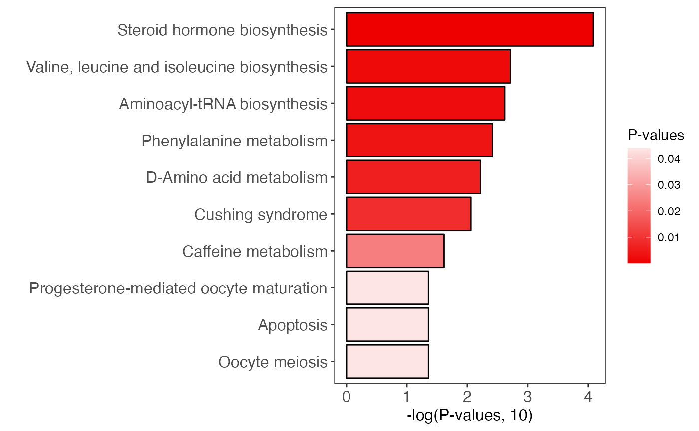
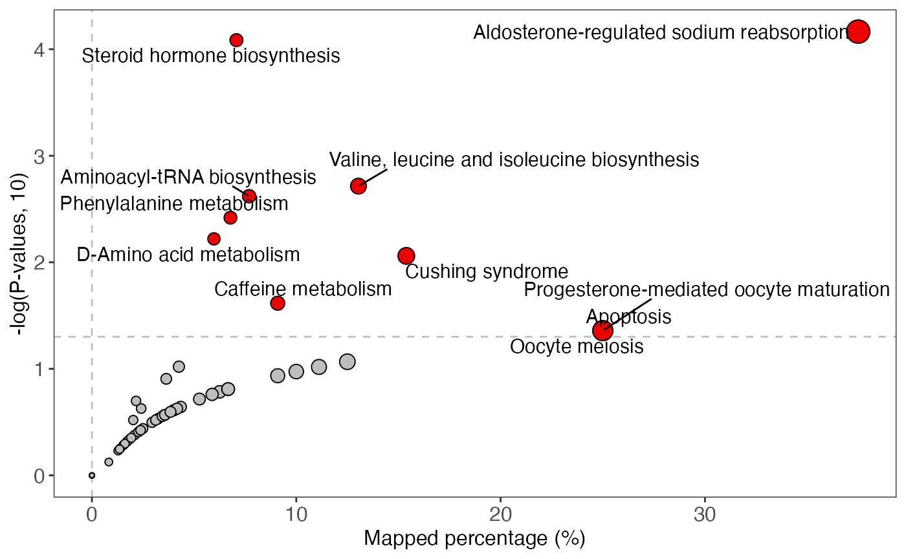
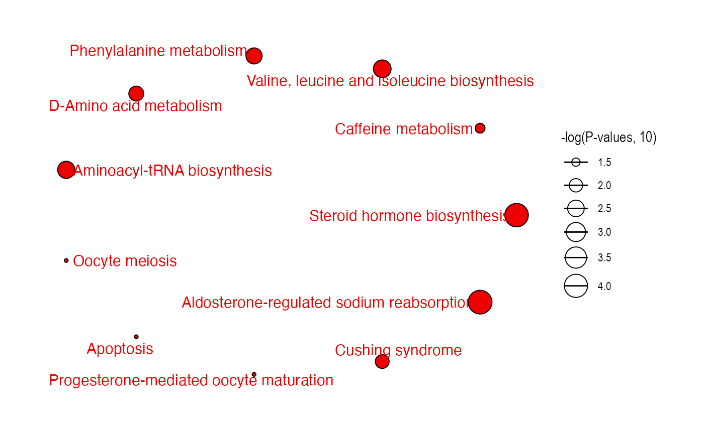

Pathway enrichment
Xiaotao Shen (https://www.shenxt.info/)
Created on 2021-12-04 and updated on 2022-02-22
pathway_enrichment.RmdData preparation
Load the differential expressional metabolites.
library(tidymass)
#> ── Attaching packages ──────────────────────────────────────── tidymass 0.9.1 ──
#> ✓ massdataset 0.99.4 ✓ metpath 0.0.1
#> ✓ massprocesser 0.9.2 ✓ metid 1.2.1
#> ✓ masscleaner 0.9.2 ✓ masstools 0.99.3
#> ✓ massqc 0.9.1 ✓ dplyr 1.0.7
#> ✓ massstat 0.99.1 ✓ ggplot2 3.3.5
#> ── Conflicts ─────────────────────────────────────────── tidymass_conflicts() ──
#> x dplyr::collect() masks xcms::collect()
#> x dplyr::combine() masks MSnbase::combine(), Biobase::combine(), BiocGenerics::combine()
#> x dplyr::filter() masks metpath::filter(), massdataset::filter(), stats::filter()
#> x dplyr::first() masks S4Vectors::first()
#> x tinytools::get_compound_class() masks masstools::get_compound_class()
#> x tinytools::get_os() masks masstools::get_os()
#> x tinytools::getDP() masks masstools::getDP()
#> x dplyr::groups() masks xcms::groups()
#> x tinytools::keep_one() masks masstools::keep_one()
#> x dplyr::lag() masks stats::lag()
#> x tinytools::ms2_plot() masks masstools::ms2_plot()
#> x tinytools::ms2Match() masks masstools::ms2Match()
#> x tinytools::mz_rt_match() masks masstools::mz_rt_match(), massdataset::mz_rt_match()
#> x tinytools::name_duplicated() masks masstools::name_duplicated()
#> x metid::read_mgf() masks tinytools::read_mgf(), masstools::read_mgf()
#> x tinytools::removeNoise() masks masstools::removeNoise()
#> x dplyr::rename() masks S4Vectors::rename(), massdataset::rename()
#> x tinytools::setwd_project() masks masstools::setwd_project()
#> x tinytools::split_formula() masks masstools::split_formula()
#> x tinytools::trans_ID() masks masstools::trans_ID()
#> x tinytools::trans_id_database() masks masstools::trans_id_database()
library(tidyverse)
#> ── Attaching packages ─────────────────────────────────────── tidyverse 1.3.1 ──
#> ✓ tibble 3.1.6 ✓ purrr 0.3.4
#> ✓ tidyr 1.1.4 ✓ stringr 1.4.0
#> ✓ readr 2.1.1 ✓ forcats 0.5.1
#> ── Conflicts ────────────────────────────────────────── tidyverse_conflicts() ──
#> x dplyr::collect() masks xcms::collect()
#> x dplyr::combine() masks MSnbase::combine(), Biobase::combine(), BiocGenerics::combine()
#> x tidyr::expand() masks S4Vectors::expand()
#> x tidyr::extract() masks magrittr::extract()
#> x dplyr::filter() masks metpath::filter(), massdataset::filter(), stats::filter()
#> x dplyr::first() masks S4Vectors::first()
#> x dplyr::groups() masks xcms::groups()
#> x dplyr::lag() masks stats::lag()
#> x ggplot2::Position() masks BiocGenerics::Position(), base::Position()
#> x purrr::reduce() masks MSnbase::reduce()
#> x dplyr::rename() masks S4Vectors::rename(), massdataset::rename()
#> x purrr::set_names() masks magrittr::set_names()
load("statiscal_analysis/object")
object
#> --------------------
#> massdataset version: 0.99.4
#> --------------------
#> 1.expression_data:[ 291 x 259 data.frame]
#> 2.sample_info:[ 259 x 11 data.frame]
#> 3.variable_info:[ 291 x 12 data.frame]
#> 4.sample_info_note:[ 11 x 2 data.frame]
#> 5.variable_info_note:[ 9 x 2 data.frame]
#> 6.ms2_data:[ 2084 variables x 1902 MS2 spectra]
#> --------------------
#> Processing information (extract_process_info())
#> create_mass_dataset ----------
#> Package Function.used Time
#> 1 massdataset create_mass_dataset() 2022-01-16 16:19:04
#> process_data ----------
#> Package Function.used Time
#> 1 massprocesser process_data 2022-01-16 16:18:43
#> mutate ----------
#> Package Function.used Time
#> 1 massdataset mutate() 2022-01-16 23:48:08
#> mutate_variable_na_freq ----------
#> Package Function.used Time
#> 1 massdataset mutate_variable_na_freq() 2022-01-18 09:11:43
#> 2 massdataset mutate_variable_na_freq() 2022-01-18 09:11:43
#> 3 massdataset mutate_variable_na_freq() 2022-01-18 09:11:43
#> filter ----------
#> Package Function.used Time
#> 1 massdataset filter() 2022-01-18 09:11:44
#> 2 massdataset filter() 2022-01-28 22:50:44
#> 3 massdataset filter() 2022-01-28 22:50:44
#> 4 massdataset filter() 2022-01-28 22:50:47
#> 5 massdataset filter() 2022-01-28 22:50:47
#> 6 massdataset filter() 2022-01-28 22:50:48
#> 7 massdataset filter() 2022-01-28 22:50:48
#> impute_mv ----------
#> Package Function.used Time
#> 1 masscleaner impute_mv() 2022-01-18 09:38:02
#> normalize_data ----------
#> Package Function.used Time
#> 1 masscleaner normalize_data() 2022-01-18 09:38:07
#> integrate_data ----------
#> Package Function.used Time
#> 1 masscleaner integrate_data() 2022-01-18 09:38:08
#> update_mass_dataset ----------
#> Package Function.used Time
#> 1 massdataset update_mass_dataset() 2022-01-19 21:53:01
#> mutate_ms2 ----------
#> Package Function.used Time
#> 1 massdataset mutate_ms2() 2022-01-19 21:53:36
#> annotate_metabolites_mass_dataset ----------
#> Package Function.used Time
#> 1 metid annotate_metabolites_mass_dataset() 2022-01-19 22:00:00
#> 2 metid annotate_metabolites_mass_dataset() 2022-01-19 22:23:24
#> 3 metid annotate_metabolites_mass_dataset() 2022-01-19 22:52:50
#> create_mass_dataset ----------
#> Package Function.used Time
#> 1 massdataset create_mass_dataset() 2022-01-16 16:20:02
#> process_data ----------
#> Package Function.used Time
#> 1 massprocesser process_data 2022-01-16 16:19:48
#> mutate ----------
#> Package Function.used Time
#> 1 massdataset mutate() 2022-01-16 23:48:08
#> mutate_variable_na_freq ----------
#> Package Function.used Time
#> 1 massdataset mutate_variable_na_freq() 2022-01-18 09:11:47
#> 2 massdataset mutate_variable_na_freq() 2022-01-18 09:11:47
#> 3 massdataset mutate_variable_na_freq() 2022-01-18 09:11:47
#> filter ----------
#> Package Function.used Time
#> 1 massdataset filter() 2022-01-18 09:11:47
#> 2 massdataset filter() 2022-01-28 22:50:45
#> 3 massdataset filter() 2022-01-28 22:50:45
#> impute_mv ----------
#> Package Function.used Time
#> 1 masscleaner impute_mv() 2022-01-18 09:38:06
#> normalize_data ----------
#> Package Function.used Time
#> 1 masscleaner normalize_data() 2022-01-18 09:50:47
#> integrate_data ----------
#> Package Function.used Time
#> 1 masscleaner integrate_data() 2022-01-18 09:50:47
#> update_mass_dataset ----------
#> Package Function.used Time
#> 1 massdataset update_mass_dataset() 2022-01-19 21:53:37
#> mutate_ms2 ----------
#> Package Function.used Time
#> 1 massdataset mutate_ms2() 2022-01-19 21:54:06
#> annotate_metabolites_mass_dataset ----------
#> Package Function.used Time
#> 1 metid annotate_metabolites_mass_dataset() 2022-01-19 22:57:19
#> 2 metid annotate_metabolites_mass_dataset() 2022-01-19 23:12:58
#> 3 metid annotate_metabolites_mass_dataset() 2022-01-19 23:40:34
#> merge_mass_dataset ----------
#> Package Function.used Time
#> 1 massdataset merge_mass_dataset 2022-01-28 22:50:45
#> slice_head ----------
#> Package Function.used Time
#> 1 massdataset slice_head() 2022-01-28 22:50:47
#> 2 massdataset slice_head() 2022-01-28 22:50:48
#> mutate_fc ----------
#> Package Function.used Time
#> 1 massdataset mutate_fc() 2022-01-28 22:50:48
#> mutate_p_value ----------
#> Package Function.used Time
#> 1 massdataset mutate_p_value() 2022-01-28 22:50:49Pathway enrichment
All the results will be placed in a folder named as pathway_enrichment.
dir.create(path = "pathway_enrichment", showWarnings = FALSE)
diff_metabolites <-
object %>%
activate_mass_dataset(what = "variable_info") %>%
filter(p_value_adjust < 0.05) %>%
extract_variable_info()
head(diff_metabolites)
#> variable_id mz rt na_freq na_freq.1 na_freq.2 na_freq_2
#> 1 M86T95_POS 86.09716 94.57264 0.02564103 0.55454545 0.29090909 NA
#> 2 M95T100_1_POS 95.04975 99.77637 0.00000000 0.00000000 0.00000000 NA
#> 3 M103T100_POS 103.05477 99.90601 0.00000000 0.00000000 0.00000000 NA
#> 4 M104T51_POS 104.10746 51.27993 0.00000000 0.07272727 0.00000000 NA
#> 5 M113T81_POS 113.03501 80.73506 0.00000000 0.00000000 0.00000000 NA
#> 6 M113T187_POS 113.06018 186.56470 0.02564103 0.01818182 0.02727273 NA
#> na_freq.1_2 na_freq.2_2 fc p_value p_value_adjust
#> 1 NA NA 1.714629 3.034938e-20 4.702229e-19
#> 2 NA NA 1.439791 6.761432e-31 3.935153e-29
#> 3 NA NA 1.345809 5.215317e-19 6.898442e-18
#> 4 NA NA 1.751085 2.695171e-08 1.188325e-07
#> 5 NA NA 1.500756 5.966911e-22 1.335670e-20
#> 6 NA NA 1.951417 1.848299e-17 1.854673e-16
#> Compound.name CAS.ID HMDB.ID KEGG.ID Lab.ID Adduct
#> 1 Piperidine 110-89-4 <NA> C01746 MONA_2852 (M+H)+
#> 2 Phenol 108-95-2 <NA> D01960 MONA_18506 (M+H)+
#> 3 Phenylacetaldehyde 122-78-1 HMDB06236 C00601 NO07389 (M+H-H2O)+
#> 4 5-Amino-1-pentanol 2508-29-4 <NA> <NA> NO07238 (M+H)+
#> 5 URACIL <NA> <NA> <NA> MONA_18148 (M+H)+
#> 6 1,4-Cyclohexanedione <NA> <NA> <NA> MONA_14519 (M+H)+
#> mz.error mz.match.score RT.error RT.match.score CE SS
#> 1 1.746869 0.9932417 NA NA 30 0.6143541
#> 2 1.416428 0.9955515 NA NA 10 0.6102452
#> 3 1.537004 0.9947640 NA NA 10 0.5748835
#> 4 1.169128 0.9969671 NA NA 5 0.5971697
#> 5 1.275544 0.9963909 NA NA 10 0.6889885
#> 6 1.051626 0.9975454 NA NA HCD (NCE 20-30-40%) 0.5401414
#> Total.score Database Level
#> 1 0.7564369 MoNA_0.0.1 2
#> 2 0.7547351 MoNA_0.0.1 2
#> 3 0.7323387 NIST_0.0.1 2
#> 4 0.7470937 NIST_0.0.1 2
#> 5 0.8042644 MoNA_0.0.1 2
#> 6 0.7116679 MoNA_0.0.1 2Load KEGG pathway human database
data("kegg_hsa_pathway", package = "metpath")
kegg_hsa_pathway
#> ---------Pathway source&version---------
#> KEGG & 2021-12-13
#> -----------Pathway information------------
#> 345 pathways
#> 334 pathways have genes
#> 0 pathways have proteins
#> 281 pathways have compounds
#> Pathway class (top 10): Metabolism; Carbohydrate metabolism;Metabolism; Lipid metabolism
#>
get_pathway_class(kegg_hsa_pathway)
#> # A tibble: 43 × 2
#> class n
#> <chr> <int>
#> 1 Cellular Processes; Cell growth and death 8
#> 2 Cellular Processes; Cell motility 1
#> 3 Cellular Processes; Cellular community - eukaryotes 5
#> 4 Cellular Processes; Transport and catabolism 7
#> 5 Environmental Information Processing; Membrane transport 1
#> 6 Environmental Information Processing; Signal transduction 26
#> 7 Environmental Information Processing; Signaling molecules and interact… 5
#> 8 Genetic Information Processing; Folding, sorting and degradation 7
#> 9 Genetic Information Processing; Replication and repair 7
#> 10 Genetic Information Processing; Transcription 3
#> # … with 33 more rowsRemove the disease pathways:
#get the class of pathways
pathway_class =
metpath::pathway_class(kegg_hsa_pathway)
head(pathway_class)
#> $hsa00010
#> [1] "Metabolism; Carbohydrate metabolism"
#>
#> $hsa00020
#> [1] "Metabolism; Carbohydrate metabolism"
#>
#> $hsa00030
#> [1] "Metabolism; Carbohydrate metabolism"
#>
#> $hsa00040
#> [1] "Metabolism; Carbohydrate metabolism"
#>
#> $hsa00051
#> [1] "Metabolism; Carbohydrate metabolism"
#>
#> $hsa00052
#> [1] "Metabolism; Carbohydrate metabolism"
remain_idx =
pathway_class %>%
unlist() %>%
stringr::str_detect("Disease") %>%
`!`() %>%
which()
remain_idx
#> [1] 1 2 3 4 5 6 7 8 9 10 11 12 13 14 15 16 17 18
#> [19] 19 20 21 22 23 24 25 26 27 28 29 30 31 32 33 34 35 36
#> [37] 37 38 39 40 41 42 43 44 45 46 47 48 49 50 51 52 53 54
#> [55] 55 56 57 58 59 60 61 62 63 64 65 66 67 68 69 70 71 72
#> [73] 73 74 75 76 77 78 79 80 81 82 83 84 85 90 91 92 93 94
#> [91] 95 96 97 98 99 100 101 102 103 104 105 106 107 108 109 110 111 112
#> [109] 113 114 115 116 117 118 119 120 121 122 123 124 125 126 127 128 129 130
#> [127] 131 132 133 134 135 136 137 138 139 140 141 142 143 144 145 146 147 148
#> [145] 149 150 151 152 153 154 155 156 157 158 159 160 161 162 163 164 165 166
#> [163] 167 168 169 170 171 172 173 174 175 176 177 178 179 180 181 182 183 184
#> [181] 185 186 187 188 189 190 191 192 193 194 195 196 197 198 199 200 201 202
#> [199] 203 204 205 206 207 208 209 210 211 212 213 214 215 216 217 218 219 220
#> [217] 221 222 223 224 225 226 227 228 229 230 236 240 241 242 243 244 245 246
#> [235] 247 248 249 250 251 252 253 254
pathway_database =
kegg_hsa_pathway[remain_idx]
pathway_database
#> ---------Pathway source&version---------
#> KEGG & 2021-12-13
#> -----------Pathway information------------
#> 242 pathways
#> 235 pathways have genes
#> 0 pathways have proteins
#> 191 pathways have compounds
#> Pathway class (top 10): Metabolism; Carbohydrate metabolism;Metabolism; Lipid metabolism
#>
kegg_id <-
diff_metabolites$KEGG.ID
kegg_id <-
kegg_id[!is.na(kegg_id)]
kegg_id
#> [1] "C01746" "D01960" "C00601" "C00153" "C01108" "C00906" "C10438" "C00300"
#> [9] "C00407" "C14790" "C08493" "C02237" "C01575" "C00073" "C05842" "C00637"
#> [17] "C00079" "D00022" "C07481" "C12305" "C17846" "D00029" "C00399" "C08362"
#> [25] "C14214" "C01595" "C00319" "C00410" "C10523" "C01780" "C00762" "C00735"
#> [33] "C17337" "C01921" "C04230" "C06539" "C00186" "C01546" "C00490" "C02226"
#> [41] "C00064" "C06104" "C02612" "C07599" "C05593" "0" "C01601" "C02656"
#> [49] "C00366" "C07130" "C05635" "C16038" "C08322" "C16308" "C10911" "C05498"
#> [57] "C05472" "C04555"
result =
enrich_kegg(query_id = kegg_id,
query_type = "compound",
id_type = "KEGG",
pathway_database = pathway_database,
p_cutoff = 0.05,
p_adjust_method = "BH",
threads = 3)
#> 191 pathways.Check the result:
result
#> ---------Pathway database&version---------
#> KEGG & 2021-12-13
#> -----------Enrichment result------------
#> 191 pathways are enriched
#> 11 pathways p-values < 0.05
#> Glycolysis / Gluconeogenesis;Citrate cycle (TCA cycle);Pentose phosphate pathway;Pentose and glucuronate interconversions;Fructose and mannose metabolism ... (only top 5 shows)
#> Plot to show pathway enrichment
enrich_bar_plot(object = result,
x_axis = "p_value",
cutoff = 0.05)
enrich_scatter_plot(object = result, y_axis = "p_value", y_axis_cutoff = 0.05)
enrich_network(
object = result,
point_size = "p_value",
p_cutoff = 0.05,
only_significant_pathway = TRUE
)
Session information
sessionInfo()
#> R version 4.1.2 (2021-11-01)
#> Platform: x86_64-apple-darwin17.0 (64-bit)
#> Running under: macOS Big Sur 10.16
#>
#> Matrix products: default
#> BLAS: /Library/Frameworks/R.framework/Versions/4.1/Resources/lib/libRblas.0.dylib
#> LAPACK: /Library/Frameworks/R.framework/Versions/4.1/Resources/lib/libRlapack.dylib
#>
#> locale:
#> [1] en_US.UTF-8/en_US.UTF-8/en_US.UTF-8/C/en_US.UTF-8/en_US.UTF-8
#>
#> attached base packages:
#> [1] stats4 stats graphics grDevices utils datasets methods
#> [8] base
#>
#> other attached packages:
#> [1] forcats_0.5.1 stringr_1.4.0 purrr_0.3.4
#> [4] readr_2.1.1 tidyr_1.1.4 tibble_3.1.6
#> [7] tidyverse_1.3.1 dplyr_1.0.7 metid_1.2.1
#> [10] metpath_0.0.1 massstat_0.99.1 ggfortify_0.4.14
#> [13] ggplot2_3.3.5 massqc_0.9.1 tinytools_0.9.1
#> [16] masscleaner_0.9.2 xcms_3.16.1 MSnbase_2.20.4
#> [19] ProtGenerics_1.26.0 S4Vectors_0.32.3 mzR_2.28.0
#> [22] Rcpp_1.0.8 Biobase_2.54.0 BiocGenerics_0.40.0
#> [25] BiocParallel_1.28.3 massprocesser_0.9.2 magrittr_2.0.2
#> [28] masstools_0.99.3 massdataset_0.99.4 tidymass_0.9.1
#>
#> loaded via a namespace (and not attached):
#> [1] ragg_1.2.1 missForest_1.4
#> [3] knitr_1.37 DelayedArray_0.20.0
#> [5] data.table_1.14.2 KEGGREST_1.34.0
#> [7] RCurl_1.98-1.5 doParallel_1.0.16
#> [9] generics_0.1.1 snow_0.4-4
#> [11] leaflet_2.0.4.1 preprocessCore_1.56.0
#> [13] callr_3.7.0 usethis_2.1.5
#> [15] RANN_2.6.1 proxy_0.4-26
#> [17] future_1.23.0 tzdb_0.2.0
#> [19] xml2_1.3.3 lubridate_1.8.0
#> [21] ggsci_2.9 SummarizedExperiment_1.24.0
#> [23] assertthat_0.2.1 viridis_0.6.2
#> [25] xfun_0.29 hms_1.1.1
#> [27] jquerylib_0.1.4 evaluate_0.14
#> [29] DEoptimR_1.0-10 fansi_1.0.2
#> [31] dbplyr_2.1.1 readxl_1.3.1
#> [33] igraph_1.2.11 DBI_1.1.2
#> [35] htmlwidgets_1.5.4 MsFeatures_1.3.0
#> [37] ellipsis_0.3.2 crosstalk_1.2.0
#> [39] backports_1.4.1 ggcorrplot_0.1.3
#> [41] MatrixGenerics_1.6.0 vctrs_0.3.8
#> [43] remotes_2.4.2 cachem_1.0.6
#> [45] withr_2.4.3 ggforce_0.3.3
#> [47] itertools_0.1-3 robustbase_0.93-9
#> [49] prettyunits_1.1.1 cluster_2.1.2
#> [51] lazyeval_0.2.2 crayon_1.4.2
#> [53] pkgconfig_2.0.3 labeling_0.4.2
#> [55] tweenr_1.0.2 GenomeInfoDb_1.30.0
#> [57] pkgload_1.2.4 devtools_2.4.3
#> [59] rlang_1.0.0 globals_0.14.0
#> [61] lifecycle_1.0.1 affyio_1.64.0
#> [63] MassSpecWavelet_1.60.0 modelr_0.1.8
#> [65] cellranger_1.1.0 randomForest_4.6-14
#> [67] rprojroot_2.0.2 polyclip_1.10-0
#> [69] matrixStats_0.61.0 Matrix_1.4-0
#> [71] reprex_2.0.1 GlobalOptions_0.1.2
#> [73] processx_3.5.2 png_0.1-7
#> [75] viridisLite_0.4.0 rjson_0.2.21
#> [77] clisymbols_1.2.0 bitops_1.0-7
#> [79] pander_0.6.4 Biostrings_2.62.0
#> [81] shape_1.4.6 parallelly_1.30.0
#> [83] robust_0.6-1 stevedore_0.9.4
#> [85] gridGraphics_0.5-1 scales_1.1.1
#> [87] memoise_2.0.1 plyr_1.8.6
#> [89] zlibbioc_1.40.0 compiler_4.1.2
#> [91] RColorBrewer_1.1-2 pcaMethods_1.86.0
#> [93] clue_0.3-60 rrcov_1.6-0
#> [95] cli_3.1.1 affy_1.72.0
#> [97] XVector_0.34.0 listenv_0.8.0
#> [99] patchwork_1.1.1 pbapply_1.5-0
#> [101] ps_1.6.0 MASS_7.3-55
#> [103] tidyselect_1.1.1 vsn_3.62.0
#> [105] stringi_1.7.6 textshaping_0.3.6
#> [107] highr_0.9 yaml_2.2.2
#> [109] MALDIquant_1.21 ggrepel_0.9.1
#> [111] grid_4.1.2 sass_0.4.0
#> [113] tools_4.1.2 parallel_4.1.2
#> [115] circlize_0.4.14 rstudioapi_0.13
#> [117] MsCoreUtils_1.6.0 foreach_1.5.1
#> [119] gridExtra_2.3 farver_2.1.0
#> [121] mzID_1.32.0 ggraph_2.0.5
#> [123] digest_0.6.29 BiocManager_1.30.16
#> [125] GenomicRanges_1.46.1 broom_0.7.12
#> [127] ncdf4_1.19 httr_1.4.2
#> [129] ComplexHeatmap_2.10.0 colorspace_2.0-2
#> [131] rvest_1.0.2 brio_1.1.3
#> [133] XML_3.99-0.8 fs_1.5.2
#> [135] IRanges_2.28.0 massconverter_0.99.1
#> [137] yulab.utils_0.0.4 pkgdown_2.0.2
#> [139] graphlayouts_0.8.0 ggplotify_0.1.0
#> [141] plotly_4.10.0 sessioninfo_1.2.2
#> [143] systemfonts_1.0.3 fit.models_0.64
#> [145] jsonlite_1.7.3 tidygraph_1.2.0
#> [147] testthat_3.1.2 R6_2.5.1
#> [149] pillar_1.6.5 htmltools_0.5.2
#> [151] glue_1.6.1 fastmap_1.1.0
#> [153] class_7.3-20 codetools_0.2-18
#> [155] pkgbuild_1.3.1 pcaPP_1.9-74
#> [157] mvtnorm_1.1-3 furrr_0.2.3
#> [159] utf8_1.2.2 lattice_0.20-45
#> [161] bslib_0.3.1 curl_4.3.2
#> [163] zip_2.2.0 openxlsx_4.2.5
#> [165] limma_3.50.0 rmarkdown_2.11
#> [167] desc_1.4.0 munsell_0.5.0
#> [169] e1071_1.7-9 GetoptLong_1.0.5
#> [171] GenomeInfoDbData_1.2.7 iterators_1.0.13
#> [173] impute_1.68.0 haven_2.4.3
#> [175] gtable_0.3.0